Estimating non-local covariate effects with sdmTMB: spatial diffusion and time lags
2026-08-05
Source:vignettes/articles/nonlocal-covariates.Rmd
nonlocal-covariates.RmdIf the code in this vignette has not been evaluated, a rendered version is available on the documentation site under ‘Articles’.
This vignette demonstrates non-local-covariate models using simulated data. These models could alternatively be described as “distributed lag” models or, in the case of spatial diffusion, “covariate diffusion” models.
When might you want to fit these models? Sometimes, the spatial or temporal scale at which covariates influence the response is unclear.
For example, fish move. Therefore, if we measure temperature at the location where a fish was sampled, it may be unclear whether the model should use the temperature at the sampling site or a smoothed version of the temperature surface that accounts for fish movement and integration over a broader spatial range.
One option is to fit models using covariates with different levels of smoothing and compare them. Alternatively, we can estimate the appropriate degree of smoothing simultaneously while we fit the model. This is what the covariate-diffusion functionality does.
Users are encouraged to read and cite Lindmark et al. (2025) for spatial models and Thorson et al. (2026) for extensions to temporal and spatiotemporal settings, including the introduction of the MSD and RMSD terms.
We begin with a simple spatial-diffusion example and then fit an
example that combines diffusion() and
time_lag() terms.
Simple spatial diffusion example
We will start by simulating data with a fine-scale predictor
(x1) and a spatially diffused effect:
set.seed(1)
n_sites <- 220
site <- data.frame(X = runif(n_sites), Y = runif(n_sites))
dat <- site
mesh <- make_mesh(dat, c("X", "Y"), cutoff = 0.05)
nonlocal_space <- data.frame(
X = mesh$mesh$loc[, 1],
Y = mesh$mesh$loc[, 2]
)
nonlocal_space$x1 <- as.numeric(scale(
sin(6 * pi * nonlocal_space$X) +
cos(6 * pi * nonlocal_space$Y) +
rnorm(nrow(nonlocal_space), sd = 1)
))
dat$x1 <- as.numeric(mesh$A_st %*% nonlocal_space$x1)
sim_space <- simulate_new(
formula = ~ 1,
data = dat,
mesh = mesh,
family = gaussian(),
spatial = "off",
spatiotemporal = "off",
range = 0.2,
sigma_O = 0,
phi = 0.1,
B = c(0, 0.8),
nonlocal_formula = ~ diffusion(x1),
nonlocal_data = nonlocal_space,
lags_kappaS = 1.5,
seed = 1
)
dat$observed <- sim_space$observed
dat$x1_truth <- sim_space$nl_truth_diffusion_x1
head(dat)
#> X Y x1 observed x1_truth
#> 1 0.2655087 0.2624741 -1.7055029 -0.073116797 -0.01308927
#> 2 0.3721239 0.1654539 -0.2216659 0.007108232 -0.01407013
#> 3 0.5728534 0.3221681 -0.4329922 -0.109571512 -0.03251081
#> 4 0.9082078 0.5101252 -1.6025141 0.119772355 -0.04969466
#> 5 0.2016819 0.9239685 -1.1300073 0.005831051 -0.03389966
#> 6 0.8983897 0.5109597 -1.4796643 -0.120935190 -0.04861044Fit the matching covariate-diffusion model:
fit <- sdmTMB(
observed ~ 1,
mesh = mesh,
nonlocal_formula = ~ diffusion(x1), #<
nonlocal_data = nonlocal_space,
spatial = "off",
data = dat
)
fit
#> Model fit by ML ['sdmTMB']
#> Formula: observed ~ 1
#> Mesh: mesh (isotropic covariance)
#> Data: dat
#> Nonlocal formula: diffusion(x1)
#> Family: gaussian(link = 'identity')
#>
#> Conditional model:
#> coef.est coef.se
#> (Intercept) -0.01 0.01
#> nl_diffusion_x1 0.22 0.27
#>
#> Dispersion parameter: 0.09
#> Nonlocal RMSD: RMSD[x1]=0.53
#> ML criterion at convergence: -206.752
#>
#> See ?tidy.sdmTMB to extract these values as a data frame.
tidy(fit)
#> # A tibble: 2 × 5
#> term estimate std.error conf.low conf.high
#> <chr> <dbl> <dbl> <dbl> <dbl>
#> 1 (Intercept) -0.00792 0.00913 -0.0258 0.00997
#> 2 nl_diffusion_x1 0.221 0.275 -0.317 0.760
tidy(fit, effects = "ran_pars")
#> # A tibble: 4 × 5
#> term estimate std.error conf.low conf.high
#> <chr> <dbl> <dbl> <dbl> <dbl>
#> 1 phi 0.0945 0.00451 0.0861 0.104
#> 2 kappaS_nl[x1] 3.77 3.31 -2.71 10.3
#> 3 MSD[x1] 0.281 0.493 -0.684 1.25
#> 4 RMSD[x1] 0.530 0.465 -0.381 1.44Here kappaS_nl[x1] is the estimated spatial diffusion
scale parameter for x1 (larger values imply less
smoothing).
The output also reports MSD[x1] and
RMSD[x1], the implied mean squared displacement
(4 / kappaS_nl[x1]^2) and root mean squared displacement
(2 / kappaS_nl[x1]). RMSD[x1] is a typical
diffusion distance (a blur radius) in coordinate units. Users applying
this spatial diffusion method should cite Lindmark et al. (2025). Users using
these MSD and RMSD metrics should consult and cite Thorson et al. (2026).
Compare true and estimated diffused covariates:
pred <- predict(fit)
pred$X <- dat$X
pred$Y <- dat$Y
cor(pred$nl_diffusion_x1, pred$x1_truth)
#> [1] 0.9599908
g1 <- ggplot(pred, aes(X, Y, colour = x1)) +
geom_point(size = 0.7) +
scale_colour_gradient2() +
coord_equal() +
ggtitle("Fine-scale observed predictor (x1)")
g2 <- ggplot(pred, aes(X, Y, colour = x1_truth)) +
geom_point(size = 0.7) +
scale_colour_gradient2() +
coord_equal() +
ggtitle("True diffused covariate (from simulation)")
g3 <- ggplot(pred, aes(X, Y, colour = nl_diffusion_x1)) +
geom_point(size = 0.7) +
scale_colour_gradient2() +
coord_equal() +
ggtitle("Estimated diffused covariate")
print(g1)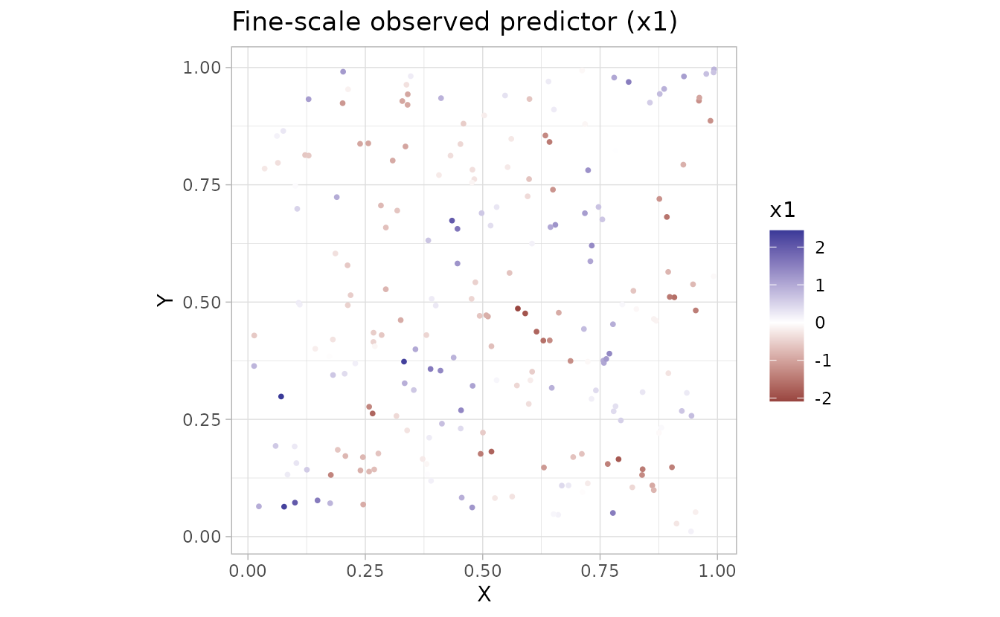
print(g2)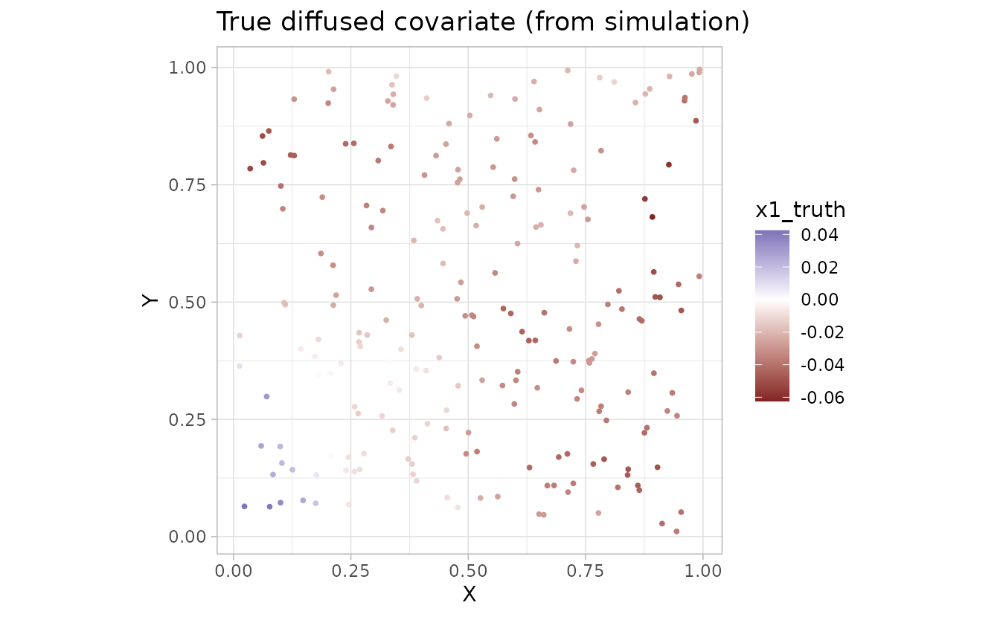
print(g3)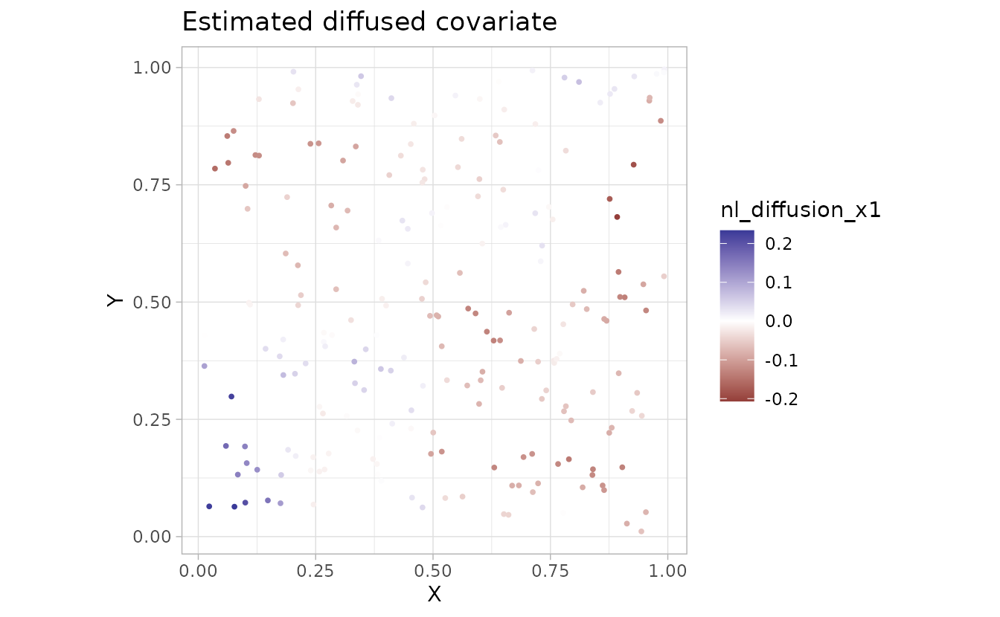
We can visualize the diffusion operator and the original and smoothed covariate on the mesh:
plot_nonlocal_kernel(fit, component = "diffusion")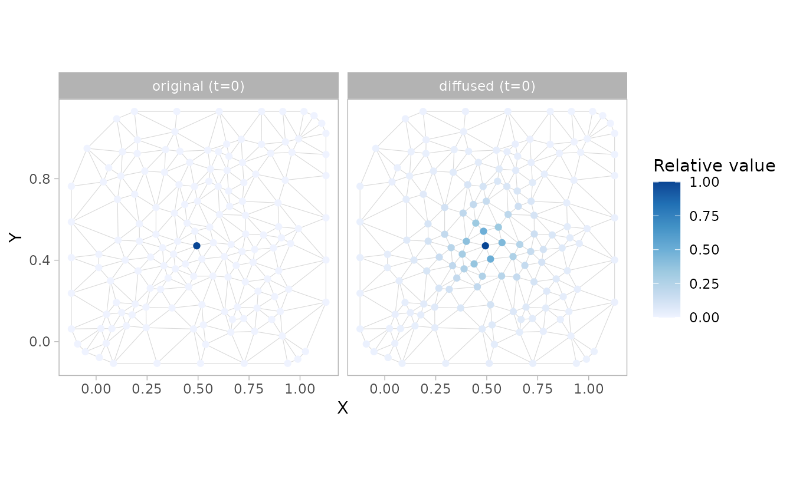
plot_nonlocal_covariate(fit, component = "diffusion")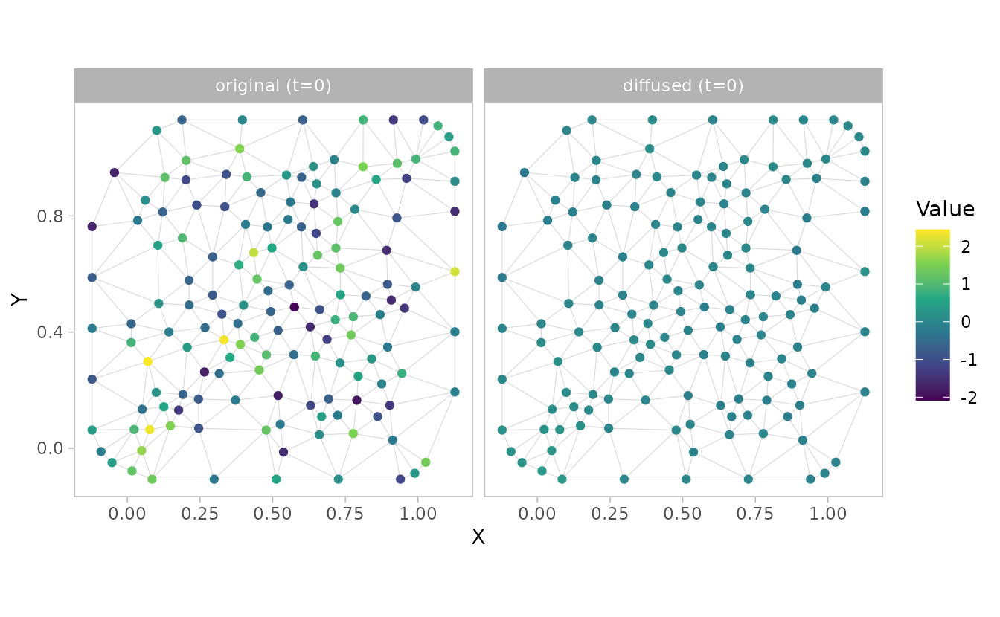
Space-time example with additive terms
Next we will simulate and fit a model containing spatial and temporal
components: ~ diffusion(x1) + time_lag(x1).
set.seed(1)
n_t <- 16
n_sites <- 300
site_st <- data.frame(X = runif(n_sites), Y = runif(n_sites))
dat_st <- data.frame(
X = rep(site_st$X, times = n_t),
Y = rep(site_st$Y, times = n_t),
year = rep(seq_len(n_t), each = n_sites)
)
mesh_st <- make_mesh(dat_st, c("X", "Y"), cutoff = 0.07)
nonlocal_st <- expand.grid(
vertex = seq_len(nrow(mesh_st$mesh$loc)),
year = seq_len(n_t)
)
nonlocal_st$X <- mesh_st$mesh$loc[nonlocal_st$vertex, 1]
nonlocal_st$Y <- mesh_st$mesh$loc[nonlocal_st$vertex, 2]
nonlocal_st$x1 <- as.numeric(scale(
sin(2 * pi * (nonlocal_st$X + nonlocal_st$year / 8)) +
cos(2 * pi * (nonlocal_st$Y - nonlocal_st$year / 10)) +
0.6 * sin(4 * pi * nonlocal_st$X) * cos(nonlocal_st$year / 3) +
rnorm(nrow(nonlocal_st), sd = 0.15)
))
nonlocal_st$vertex <- NULL
dat_st$x1 <- NA_real_
for (tt in seq_len(n_t)) {
rows <- dat_st$year == tt
vertex_values <- nonlocal_st$x1[nonlocal_st$year == tt]
dat_st$x1[rows] <- as.numeric(mesh_st$A_st[rows, ] %*% vertex_values)
}
sim_st <- simulate_new(
formula = ~ 1,
data = dat_st,
mesh = mesh_st,
time = "year",
family = gaussian(),
spatial = "on",
spatiotemporal = "off",
range = 0.3,
sigma_O = 0.2,
phi = 0.1,
B = c(0, 0.7, 0.6),
nonlocal_formula = ~ diffusion(x1) + time_lag(x1),
nonlocal_data = nonlocal_st,
lags_kappaS = 4.4,
lags_rhoT = 0.3,
seed = 123
)
dat_st$observed <- sim_st$observed
fit_st <- sdmTMB(
observed ~ 1,
mesh = mesh_st,
time = "year",
nonlocal_formula = ~ diffusion(x1) + time_lag(x1), #<
nonlocal_data = nonlocal_st,
spatial = "on",
spatiotemporal = "off",
data = dat_st
)
sanity(fit_st)
#> ✔ Non-linear minimizer suggests successful convergence
#> ✔ Hessian matrix is positive definite
#> ✔ No extreme or very small eigenvalues detected
#> ✔ No gradients with respect to fixed effects are >= 0.001
#> ✔ No fixed-effect standard errors are NA
#> ✔ No standard errors look unreasonably large
#> ✔ No sigma parameters are < 0.01
#> ✔ No sigma parameters are > 100
#> ✔ Range parameter doesn't look unreasonably large
fit_st
#> Spatial model fit by ML ['sdmTMB']
#> Formula: observed ~ 1
#> Mesh: mesh_st (isotropic covariance)
#> Time column: character
#> Data: dat_st
#> Nonlocal formula: diffusion(x1) + time_lag(x1)
#> Family: gaussian(link = 'identity')
#>
#> Conditional model:
#> coef.est coef.se
#> (Intercept) 0.01 0.05
#> nl_diffusion_x1 0.70 0.01
#> nl_time_lag_x1 0.60 0.01
#>
#> Dispersion parameter: 0.10
#> Nonlocal temporal persistence: rhoT[x1]=0.30
#> Matérn range: 0.28
#> Spatial SD: 0.17
#> Nonlocal RMSD: RMSD[x1]=0.38
#> ML criterion at convergence: -4055.067
#>
#> See ?tidy.sdmTMB to extract these values as a data frame.
tidy(fit_st, effects = "ran_pars")
#> # A tibble: 8 × 5
#> term estimate std.error conf.low conf.high
#> <chr> <dbl> <dbl> <dbl> <dbl>
#> 1 range 0.280 0.0504 0.196 0.398
#> 2 phi 0.0997 0.00103 0.0978 0.102
#> 3 sigma_O 0.173 0.0175 0.142 0.211
#> 4 kappaS_nl[x1] 4.40 0.0891 4.22 4.57
#> 5 kappaT_nl[x1] 0.437 0.0110 0.415 0.459
#> 6 rhoT[x1] 0.304 0.00535 0.294 0.315
#> 7 MSD[x1] 0.144 0.00667 0.131 0.157
#> 8 RMSD[x1] 0.379 0.00879 0.362 0.397In the random-effect parameters, kappaS_nl[x1] controls
spatial diffusion and kappaT_nl[x1] controls temporal lags.
Users applying the time-lag functionality should read and cite Thorson et al. (2026).
Supplying a separate covariate grid
By default, the covariate field used for diffusion is built from
data alone. If the covariate is available on a finer or
more complete grid than the observation locations, we can supply it via
nonlocal_data. This also lets us define the covariate at a
forecast (extra_time) slice without padding
data with extra rows.
extra_yr <- n_t + 1
grid_st <- expand.grid(
vertex = seq_len(nrow(mesh_st$mesh$loc)),
year = seq_len(extra_yr)
)
grid_st$X <- mesh_st$mesh$loc[grid_st$vertex, 1]
grid_st$Y <- mesh_st$mesh$loc[grid_st$vertex, 2]
grid_st$x1 <- as.numeric(scale(
sin(2 * pi * (grid_st$X + grid_st$year / 8)) +
cos(2 * pi * (grid_st$Y - grid_st$year / 10)) +
0.6 * sin(4 * pi * grid_st$X) * cos(grid_st$year / 3)
))
grid_st$vertex <- NULL
fit_st_grid <- sdmTMB(
observed ~ 1,
mesh = mesh_st,
time = "year",
nonlocal_formula = ~ diffusion(x1) + time_lag(x1), #<
nonlocal_data = grid_st, #<
extra_time = extra_yr, #<
spatial = "on",
spatiotemporal = "off",
data = dat_st
)
sanity(fit_st_grid)
#> ✔ Non-linear minimizer suggests successful convergence
#> ✔ Hessian matrix is positive definite
#> ✔ No extreme or very small eigenvalues detected
#> ✔ No gradients with respect to fixed effects are >= 0.001
#> ✔ No fixed-effect standard errors are NA
#> ✔ No standard errors look unreasonably large
#> ✔ No sigma parameters are < 0.01
#> ✔ No sigma parameters are > 100
#> ✔ Range parameter doesn't look unreasonably largeWe will plot the spatially diffused covariate on the non-local data grid locations:
pred_grid <- predict(fit_st_grid, newdata = grid_st)
ggplot(pred_grid, aes(X, Y, fill = nl_diffusion_x1)) +
geom_point(shape = 21) +
facet_wrap(~year) +
scale_fill_gradient2()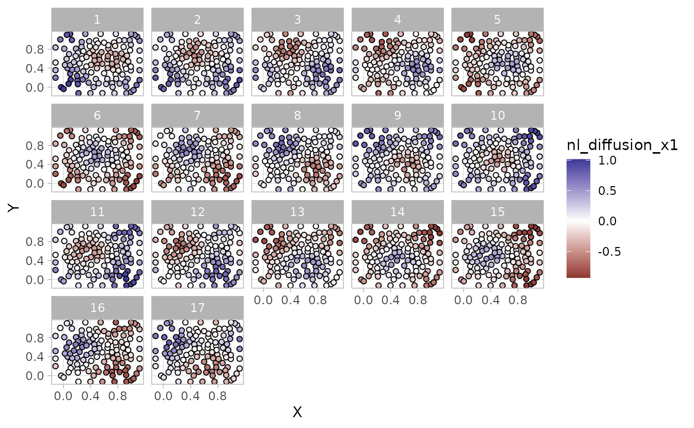
Plot diffusion kernels
We can separately visualize the spatial diffusion, time diffusion, or their combined effects as either the diffusion kernel or the smoothed covariate field. By default, the diffusion kernel is shown at the mesh vertices:
plot_nonlocal_kernel(fit_st, component = "diffusion")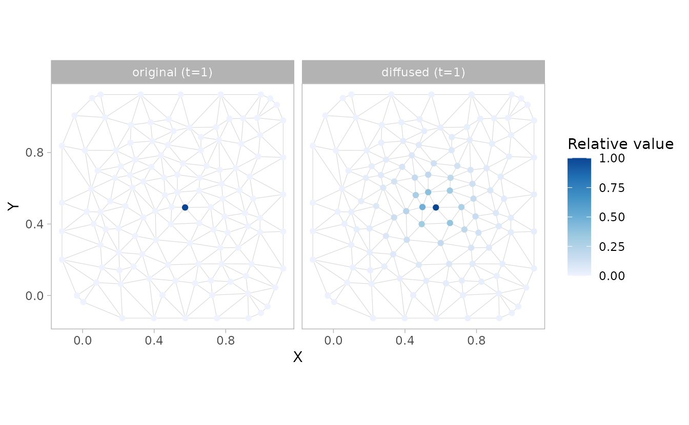
plot_nonlocal_kernel(fit_st, component = "time_lag", common_scale = TRUE)
plot_nonlocal_kernel(fit_st, component = "combined")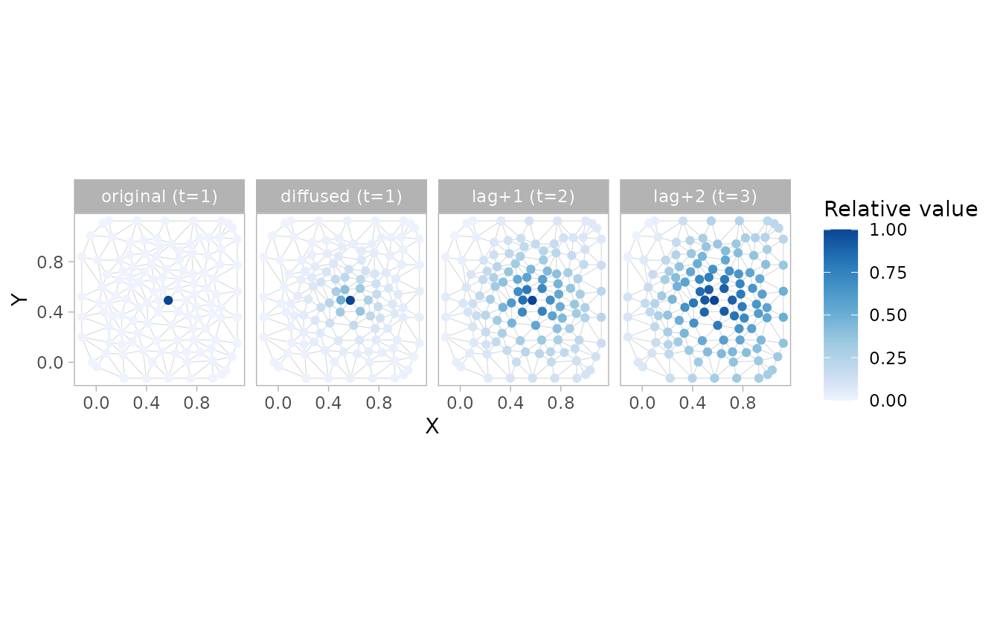
plot_nonlocal_kernel(fit_st, component = "combined", common_scale = TRUE)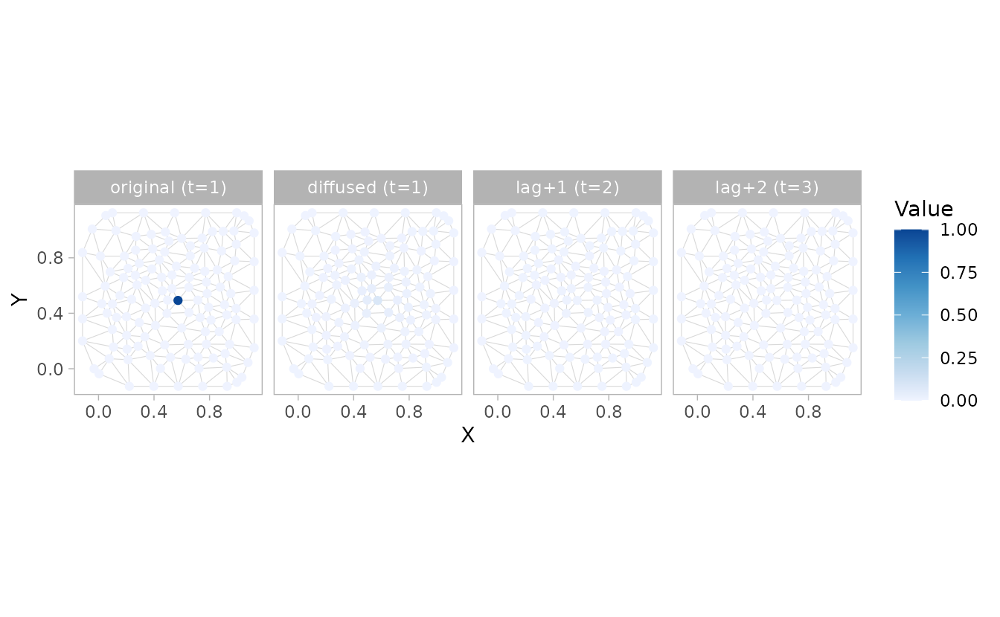
In the last case, the colour scale makes it hard to see the variation. We could add our own ggplot colour scale transformation:
plot_nonlocal_kernel(fit_st, component = "combined", common_scale = TRUE) +
scale_colour_distiller(trans = "log10", palette = "Blues", direction = 1)
#> Scale for colour is already present.
#> Adding another scale for colour, which will replace the existing scale.
#> Warning in scale_colour_distiller(trans = "log10", palette = "Blues", direction
#> = 1): log-10 transformation introduced infinite values.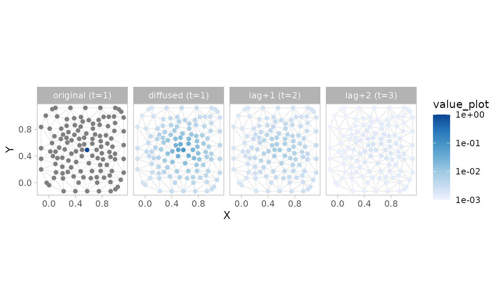
All the knots except one in the “original” panel were zero, so they become -Inf when log transformed, but now we can see the space and time nonlocal effects.
plot_nonlocal_covariate(fit_st, component = "diffusion")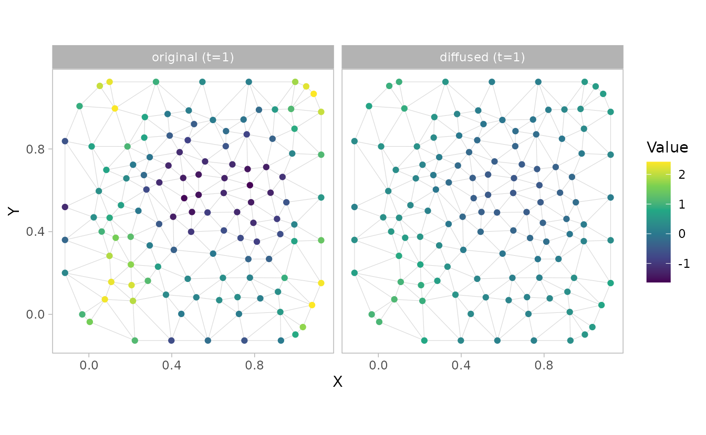
plot_nonlocal_covariate(fit_st, component = "time_lag", n_steps = 2)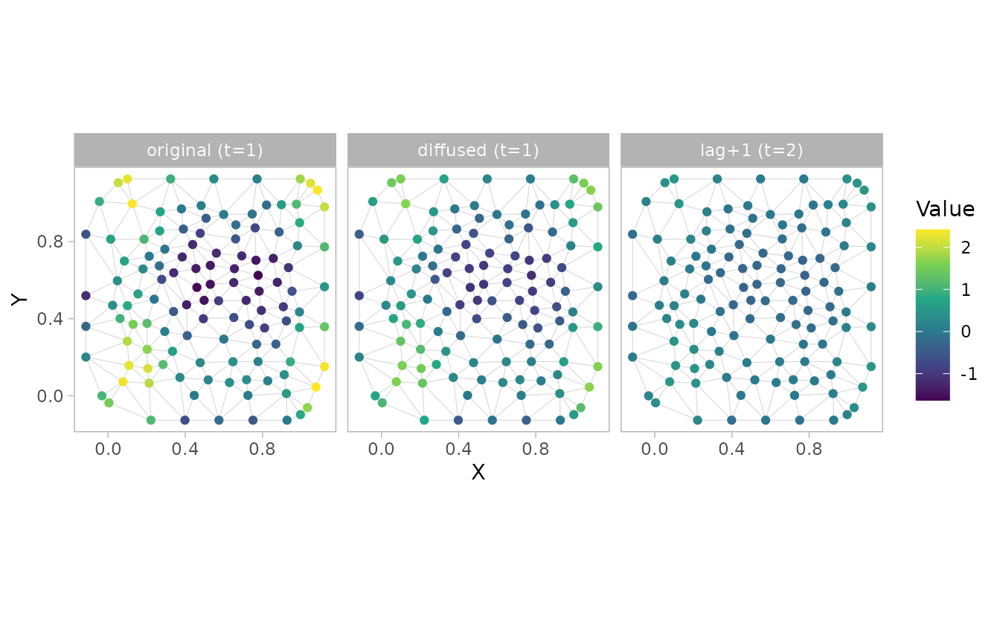
plot_nonlocal_covariate(fit_st, component = "combined", n_steps = 2)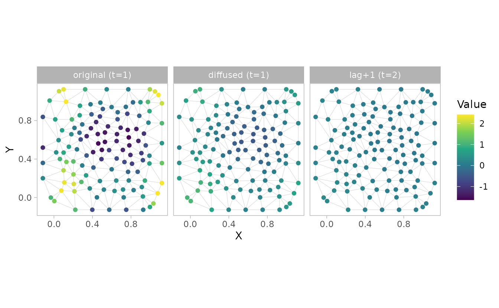
We could also have plotted the spatially diffused covariate at the original locations from the predictions.
pred <- predict(fit_st)
ggplot(pred, aes(X, Y, colour = x1)) + geom_point() +
scale_colour_gradient2()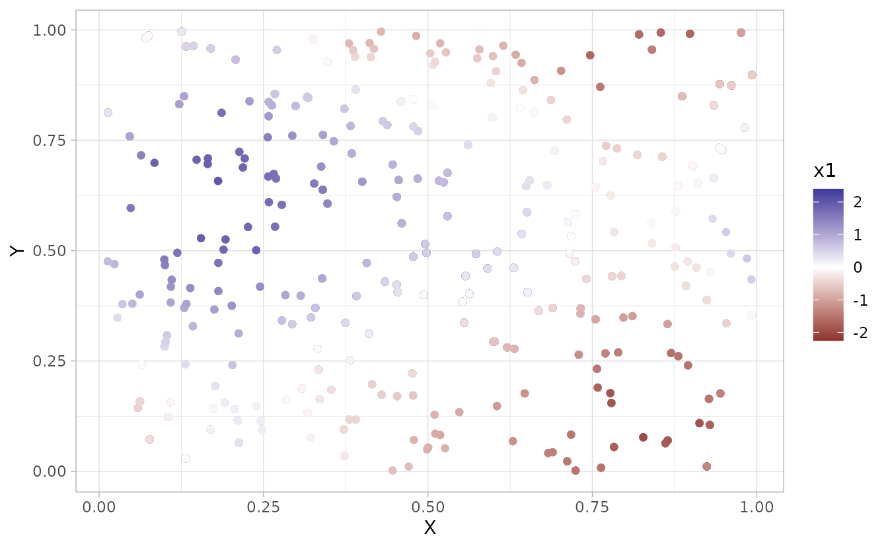
ggplot(pred, aes(X, Y, colour = nl_diffusion_x1)) + geom_point() +
scale_colour_gradient2()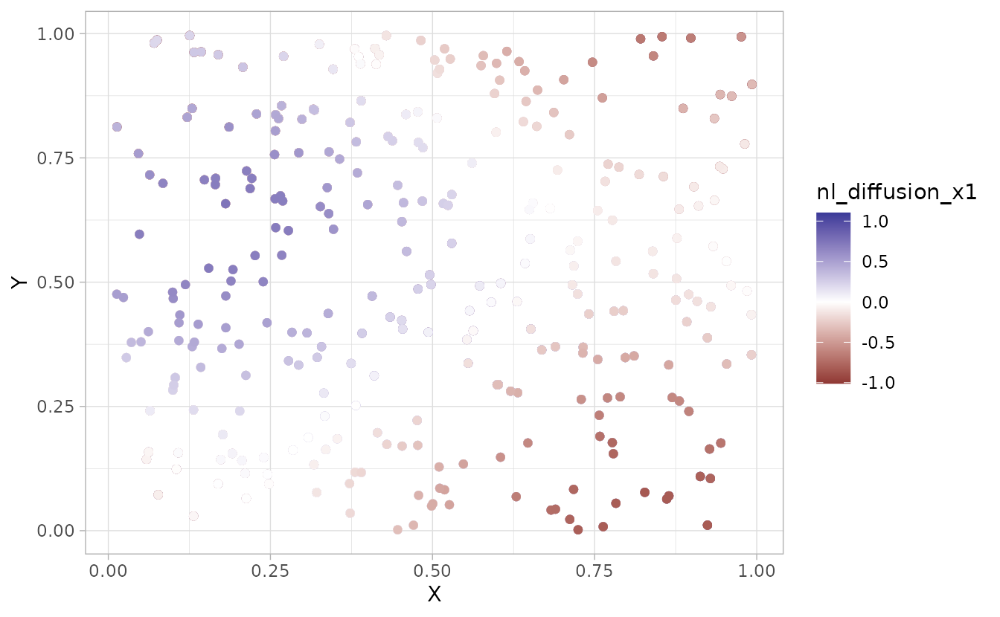
predict() vs. the non-local plotting functions
These two paths answer different questions, so pick based on what you need:
Use
predict()and thenl_*columns for the modeled effect. Columns such asnl_diffusion_x1andnl_time_lag_x1are the transformed covariate values that enter the linear predictor at your data ornewdatalocations. Fortime_lag()these accumulate the response across all prior time slices, and fordiffusion()they give the smoothed field integrated over space. This is what you want for reporting, mapping the estimated effect, correlating against a known truth, or any downstream calculation. One column is returned per fittednonlocal_formulaterm.Use
plot_nonlocal_kernel()andplot_nonlocal_covariate()for diagnostics. These visualize how the estimated operator behaves.plot_nonlocal_kernel()shows the impulse response (how a point input spreads in space and/or decays through time) and cannot be reconstructed from thenl_*columns.plot_nonlocal_covariate()isolates a single input time slice and shows how it propagates forward overn_steps; it also offerscomponent = "combined"(the joint space-and-time response), which is not returned as apredict()column. Both plot on the mesh vertices by default, or at suppliednewdatacoordinates as points or a raster.
For the pure spatial diffusion() case at a single time
slice, plot_nonlocal_covariate() and mapping
nl_diffusion_x1 from predict() show the same
field, so either is fine. The plotting functions become most useful for
temporal (time_lag()) and combined terms, and
whenever you want to inspect the operator on the mesh itself.